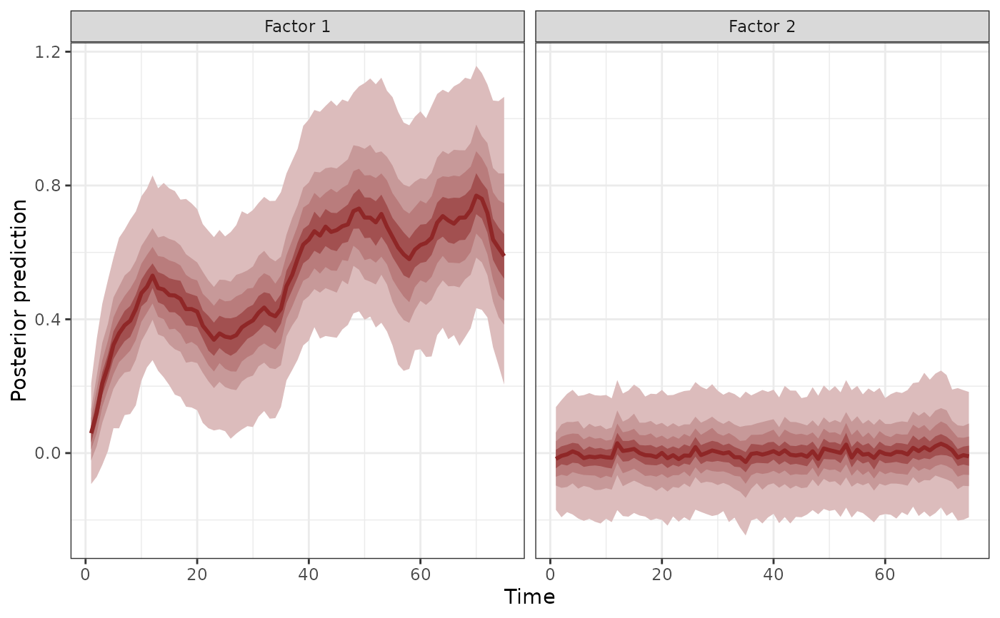

Latent factor summaries for a fitted mvgam object
Source:R/plot_mvgam_factors.R
plot_mvgam_factors.RdThis function takes a fitted mvgam object and returns plots and summary statistics for
the latent dynamic factors
Arguments
- object
listobject returned frommvgam. Seemvgam()- plot
logicalspecifying whether factors should be plotted
Details
If the model in object was estimated using dynamic factors, it is possible that not all factors
contributed to the estimated trends. This is due to the regularisation penalty that acts independently on each
factor's Gaussian precision, which will squeeze un-needed factors to a white noise process (effectively dropping
that factor from the model). In this function, each factor is tested against a null hypothesis of white noise by
calculating the sum of the factor's 2nd derivatives. A factor that has a larger contribution will have a larger
sum due to the weaker penalty on the factor's precision. If
plot == TRUE, the factors are also plotted.
Examples
# \donttest{
simdat <- sim_mvgam()
mod <- mvgam(y ~ s(season, bs = 'cc',
k = 6),
trend_model = AR(),
use_lv = TRUE,
n_lv = 2,
data = simdat$data_train,
chains = 2)
#> Warning in '/tmp/Rtmp9GG4fl/model_0f5e123adc47a9208b1c8eaa9e58906b.stan', line 23, column 31: Found
#> int division:
#> n_lv * (n_lv - 1) / 2
#> Values will be rounded towards zero. If rounding is not desired you can
#> write
#> the division as
#> n_lv * (n_lv - 1) / 2.0
#> If rounding is intended please use the integer division operator %/%.
#> Compiling Stan program using cmdstanr
#>
#> Start sampling
#> Running MCMC with 2 parallel chains...
#>
#> Chain 1 Iteration: 1 / 1000 [ 0%] (Warmup)
#> Chain 2 Iteration: 1 / 1000 [ 0%] (Warmup)
#> Chain 1 Iteration: 100 / 1000 [ 10%] (Warmup)
#> Chain 2 Iteration: 100 / 1000 [ 10%] (Warmup)
#> Chain 2 Iteration: 200 / 1000 [ 20%] (Warmup)
#> Chain 1 Iteration: 200 / 1000 [ 20%] (Warmup)
#> Chain 2 Iteration: 300 / 1000 [ 30%] (Warmup)
#> Chain 1 Iteration: 300 / 1000 [ 30%] (Warmup)
#> Chain 1 Iteration: 400 / 1000 [ 40%] (Warmup)
#> Chain 2 Iteration: 400 / 1000 [ 40%] (Warmup)
#> Chain 1 Iteration: 500 / 1000 [ 50%] (Warmup)
#> Chain 1 Iteration: 501 / 1000 [ 50%] (Sampling)
#> Chain 2 Iteration: 500 / 1000 [ 50%] (Warmup)
#> Chain 2 Iteration: 501 / 1000 [ 50%] (Sampling)
#> Chain 1 Iteration: 600 / 1000 [ 60%] (Sampling)
#> Chain 2 Iteration: 600 / 1000 [ 60%] (Sampling)
#> Chain 1 Iteration: 700 / 1000 [ 70%] (Sampling)
#> Chain 1 Iteration: 800 / 1000 [ 80%] (Sampling)
#> Chain 2 Iteration: 700 / 1000 [ 70%] (Sampling)
#> Chain 2 Iteration: 800 / 1000 [ 80%] (Sampling)
#> Chain 1 Iteration: 900 / 1000 [ 90%] (Sampling)
#> Chain 1 Iteration: 1000 / 1000 [100%] (Sampling)
#> Chain 2 Iteration: 900 / 1000 [ 90%] (Sampling)
#> Chain 1 finished in 1.5 seconds.
#> Chain 2 Iteration: 1000 / 1000 [100%] (Sampling)
#> Chain 2 finished in 1.7 seconds.
#>
#> Both chains finished successfully.
#> Mean chain execution time: 1.6 seconds.
#> Total execution time: 1.8 seconds.
#>
plot_mvgam_factors(mod)

#> Contribution
#> Factor1 0.490468
#> Factor2 0.509532
# }